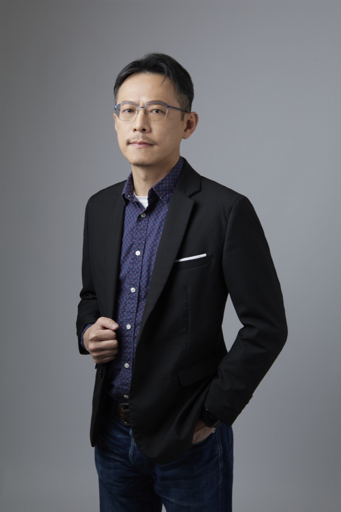
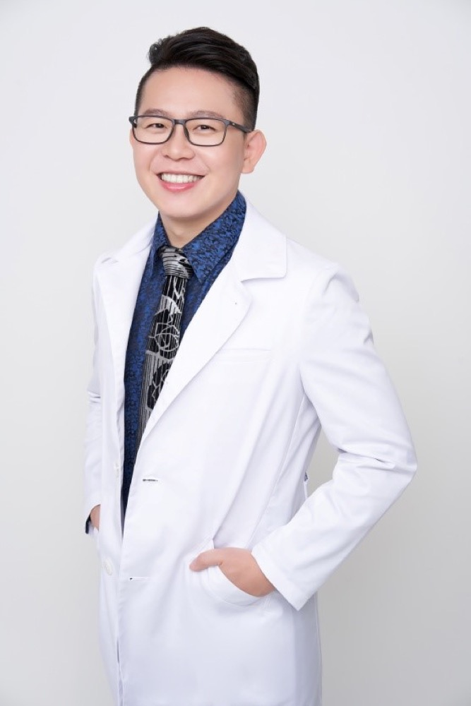

蔡
蔡彥群
新店總院院長
專長待醫師確認
一般耳鼻喉科疾病、鼻喉疾患；具內科訓練背景。
- 中國醫藥大學 醫學士
- 林口長庚醫院 耳鼻喉科總醫師
- 林口長庚醫院 耳鼻喉科主治醫師
- 台北市仁愛醫院 內科住院醫師
六位耳鼻喉科專科醫師與一位小兒專科醫師，於新店、木柵、興隆三院區，守護全家人的耳鼻喉與睡眠健康。
從 2010 年新店起步，大豐的醫師一路在新店與文山扎根，從基層耳鼻喉照護，到睡眠、眩暈與頭頸部的專業評估，陪伴社區每一個家庭。
以下各醫師之「專長」為依學經歷整理，實際專長與看診時段以醫師本人確認為準；門診排班請見各院區頁面。
新店總院院長
一般耳鼻喉科疾病、鼻喉疾患；具內科訓練背景。

主治醫師
一般耳鼻喉科疾病、鼻部與咽喉疾患；兒童睡眠呼吸中止症之手術治療經驗。
主治醫師
一般耳鼻喉科疾病、鼻部與咽喉疾患；具國際耳鼻喉頭頸外科手術進修經驗。

木柵分院院長
頭頸部腫瘤評估、鼻整形（功能性與重建）、睡眠呼吸中止症手術、過敏與氣喘照護。
小兒專科醫師
兒童常見疾病、兒童感冒與過敏，及小兒耳鼻喉相關問題之診療。